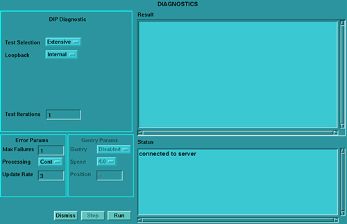

Operating Documentation
Direction 5114043-800, Rev# 9
LightSpeed 3.X Service Methods (Advanced)
Operating Documentation |
The RIP board is a common place for scan data acquisition system errors to be logged and reported. Scan data acquisition errors are reported to the RIP, using interrupts, real-time. This section attempts to sort out those failures so that the failing subsystem can be correctly identified.
Failures can occur almost anywhere along the scan data acquisition chain, including the DIP and RIP board. Error detection and correction schemes built into slip ring communications (SRC) are the first level of defense. To prevent lost/missing and/or corrupt data from being processed.
The first step is to identify the failing subsystem. Failures common to the SRC subsystem are FEC errors, serial data modem violations and view length errors. If you receive any of these errors, the SRC subsystem should be thoroughly checkout first. If you receive data checksum or parity errors error messages, then the DIP and RIP board (ICE box subsystem) should be thoroughly tested.
Forward Error Correction (FEC) protects the integrity of the link between the DAS DCB and the DIP. Without any form of error correction, the system bit error rate is 10-12. This translates to a data error every one week of scanning. With FEC, the not correctable failure rate is reduced to 10-15 or a data error every 6 years. Therefore FEC virtually eliminates the possibility of a data error between the DCB and the DIP. In addition, the FEC on board the DIP will maintain a running count in the board status register, per scan, of the number of corrected bit errors. This register is readable from the RIP and can be used to maintain statistics and indicate potential problems.
A SERIAL DATA modem violation is a very basic failure of the communication link, indicating that the link has broken.
A view length error is another very basic failure of the communication link, indicating lost data and that the link has been broken.
SRC errors indicate problems with the DAS to DIP communication link, not the DIP or the DIP to RIP interface. Since the PCI bus link in the ICE box is orders of magnitude more reliable than the SRC path, error correction is not used. However, error detection is used with the RIP’s PCI interface to the DIP board. The following errors indicates a detection problem in either the DIP or the RIP board.
A checksum for each view is generated by the DCB (in the DAS) and stored in the view data. View data is stored on the scan data disk by the DIP and RIP. The checksum is tested when view data is restored from disk. Any failure that generates a checksum error should have also generated one of the above mentioned SRC errors. If not, the error could have only occurred on the DIP board or during the transfer of data from the DIP to the RIP.
The PCI interface uses parity error detection. A parity bit is generated for each scan data word transmitted across the PCI interface between the DIP and the RIP. Hardware on board the RIP checks parity and produces an abort condition when an error is detected. A parity error can only occur during the transfer of data from the DIP to the RIP.
To isolate the DIP from the RIP board as the failing, the following should be done:
View the system error log. FEC, serial data modem, or view length errors indicate a DAS to DIP error, not a DIP failure. PCI parity errors indicate a DIP to RIP error. Data checksum errors indicate a DIP, RIP or possibly a scan data disk error.
Run DIP BLDs. These tests will run known data patterns through the DIP at full data rates, indicating problems on board the DIP or the DIP to RIP interface.
Run the system data path tests. These tests will run known data patterns from the DAS to the RIP, through the DIP at full data rates. By monitoring the system error log as mentioned above, more information can be gathered to determine the failing FRU.
If the DIP and RIP boards are to work correctly, they must be able to communicate reliably. Three simple questions must be answered first:
Is the DIP board recognized by the RIP “CPU”?
Can data be transferred from the DIP to the RIP board reliably?
Is data received reliably from the slipring?
Performing the following steps to determine whether the RIP Board (VxWorks) sees the existence of the DIP Board through the PCI interface.
Shutdown Applications:
Click on the [SERVICE DESKTOP] .
Click on the [UTILITIES] icon.
Click on [APPLICATION SHUTDOWN] .
Open a UNIX Shell.
Serial connect to the VxWorks prompt.
At the Octane ctuser prompt, type:
ice stop start connect<ENTER>
Execute the VxWorks command to view the PCI Devices information:
-> pciDeviceShow<ENTER>
Inspect the screen output. Verify the DIP board is recognized by the RIP through its PCI interface.
Scanning function 0 of each PCI device on bus 0
Using configuration mechanism 1
bus device function vendorID deviceID class
00000000 00000000 00000000 00001057 00004801 00060000
00000000 0000000b 00000000 000010ad 00000565 00060100
00000000 0000000d 00000000 000010e3 00000000 00068000
00000000 0000000e 00000000 00001011 00000009 00020000
00000000 00000010 00000000 00001000 0000000f 00010000 <-- DIP bd
00000000 00000011 00000000 00000001 00000001 00ff0000
value = 0 = 0x0
In the above example, the last line of information in the printout (as marked) identifies the DIP Board, and shows that it is properly recognized by VxWorks
Exit VxWorks and return to the Octane ctuser prompt. At the VxWorks prompt, type:
->~.<ENTER>
Diagnostics for the DIP board are located on the Service Desktop, under the Diagnostics Menu. There are two types of test selections available (quick and extensive), and two sources of data (internal loopback and external loopback).
If you wish to perform the external loopback tests, you will need to loop back data between the fiber-optic jacks (J2 and J3) on the DIP board. A suggested cable for this purpose is the fiber-optic cable used to connect the DCB to the slip ring transmitter. (Fiber-optic Cable Part Number is 2293408.)
Click on the [SERVICE DESKTOP] .
Click on the [DIAGNOSTICS] icon.
Click on [DIP DIAGNOSTICS] .
A diagnostic GUI will appear on the console that will allow you to select the testing mode and the loopback mode. See Illustration 1. If you select “external” for the loopback mode, a separate window will pop-up, reminding you of the need to install an external fiber-optic jumper.
Illustration 1: DIP Diagnostics GUI
